_files/dapmh1.png)
Preface:
This guide is designed for beginners looking to create their first few HD HANDJOB encodes for the group using a Mac computer system. When you’ve finished your encode please drop by the HANDJOB thread to get it approved for uploading. If you upload your encode using the HANDJOB name before getting it approved, your torrent will very likely be deleted by PTP.
This guide covers BluRay encodes only. If you want to encode from a DVD source, please follow Wiki > The HANDJOB Guide to DVDRips for Mac (Beginner Friendly).
Act 1: software and settings
Please note that a lot of this software relies on Wine, which is not compatible with MacOS 10.15+ (Catalina onwards). If you are using Catalina+ and would like to use software for Windows, you'll need to look into Boot Camp or another form of Virtualisation.
Here's what you're gonna need:
- MakeMKV – What, Why, Where?: Show
This program is what we use to extract the film from the Blu-Ray disc itself and to create a remux of it on the hard disk. Considering the amount of time encoding takes, it's generally better not to keep the optical drive spinning for that long. It will also enable us to work with the audio and subtitles.
You will need to enter a serial number to unlock Blu-Ray functionality in MakeMKV. This is provided free-of-charge by the developers while the software is in beta. Visit http://www.makemkv.com/forum2/viewtopic.php?f=5&t=1053 to get the latest serial code. You will need to update this serial every few months._files/c3qzae.png)
- Handbrake
- Mediainfo – Info: ShowDownload sourced from Brokenstones
- VLC 3.0.2+ – What's this?: Show
VLC is an open-source program able to play practically any media you throw at it. It is also capable of taking accurate screenshots of our encodes, which we'll need for the approval process (both at HANDJOB and with PTP).
Make sure not to use any version below 3.0.2 since previous iterations had issues taking accurately sized screenshots for certain types of media. - Winebottler – What's this?: Show
This is an application which will allow you to easily install small Windows apps and their dependencies on a Mac computer (as MacOS apps). We will be using it with SupRip (see below). Download the latest stable version and install.
- SupRip - What's this?: Show
Although a Windows application, we will be using this with Winebottler (above) to enable us to create subtitles for our encodes using OCR (Optical Character Recognition). Other applications are available, but for the purposes of this guide, we'll go with SupRip. Download the latest version and unzip the file.
- BDSup2Sub - What's this?: Show
Subtitle tracks which we cannot convert to text using OCR-ing (Optical Character Recognition) may need to be resized to ensure that their display size is appropriate for the resolution of the encode, this does that.
- Wine - What's this?: Show
While Winebottler works for some small GUI applications, we need a different type of installation to run command line applications like eac3to (below). Download the latest 'Stable' version.
- eac3to - What's this?: Show
This is a custom HANDJOB package which containing various audio programs and dependencies. Once unzipped, it's recommended that you put the eac3to folder in your Documents folder.
Contents:• eac3to• qaac (for encoding AAC audio)• Apple Application Support (necessary .dll dependencies for qaac)• SoX (for bit-depth reduction of FLAC audio) - MKVToolNix (Get the MacOS X version) – What, why?: Show
MKV files are what's known as a container file. That means there are lots of other inner files (like video, audio, chapters and subtitles) contained within them. This program allows you to add, remove, rename or edit any of those inner files without having to re-encode anything. This will be needed for when you come to deal with subtitles.
Setting up SupRip: Show
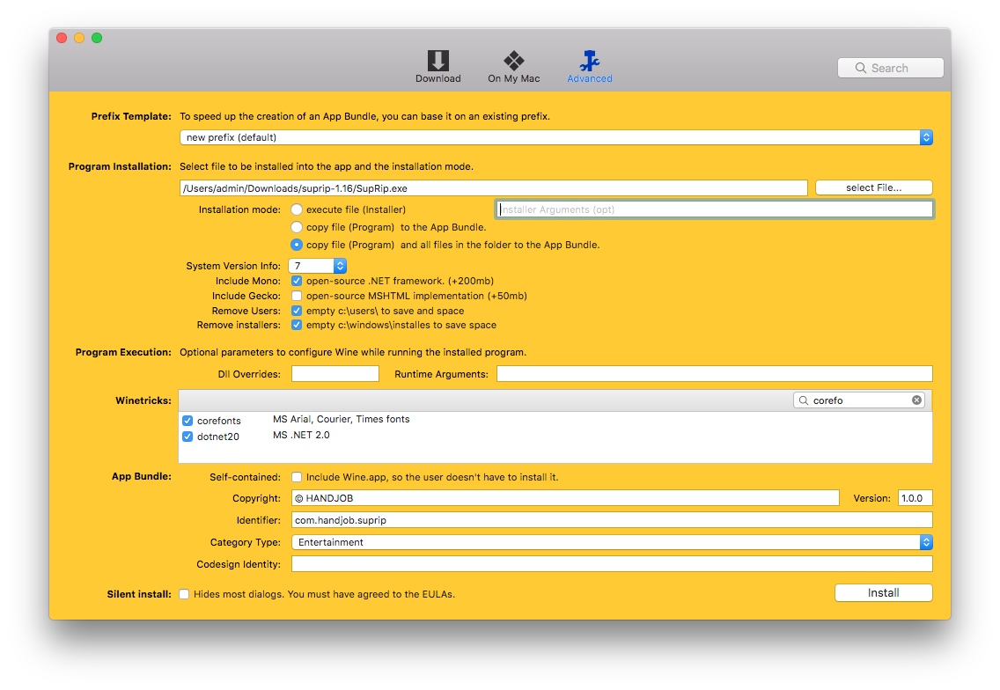You should have already installed Winebottler, so launch it and navigate to the 'Advanced' tab. Use the image above to install SupRip. Remember to target the .exe file with the 'Browse' prompt and to use the 'Copy all files in the same folder' option as illustrated. For this program to work, you'll need to also select the 'dotnet20' and 'corefonts' plug-ins from the Winetricks menu (illustrated above). Hit install, choose an install location and it should be ready to use. Note that when launching the application, it might quit before relaunching. This is nothing to worry about.
Setting up Wine and eac3to: Show
We'll need a version of Wine we can use from the MacOS Terminal to get eac3to working. The process isn't complicated, but we've created an extremely detailed step-by-step to help. First of all, download Wine Stable from the link in the software section above. Install:
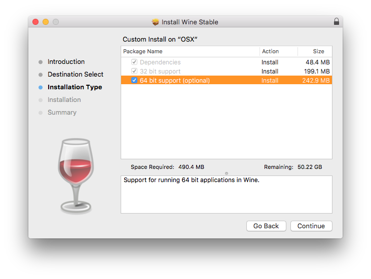
Next, Wine is going to need a dependency installed. This uses Homebrew which you may also need to install first. If you haven't installed Homebrew previously, open up Terminal (located in Applications -> Utilities) and paste in:
/usr/bin/ruby -e "$(curl -fsSL https://raw.githubusercontent.com/Homebrew/install/master/install)"
Homebrew is very user-friendly and will guide you through everything during installation. Once it's complete, enter:
Which should then look like this:brew install Caskroom/cask/xquartz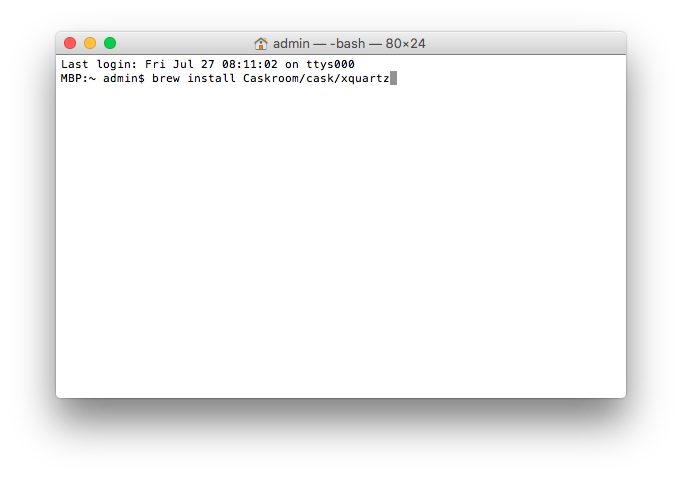
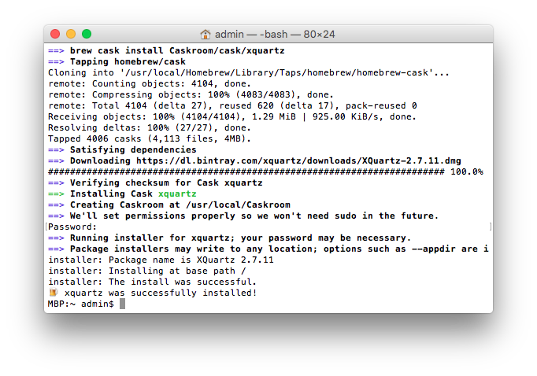
You can close the Terminal window now, since we won't be using that one again. Next, download the HANDJOB custom package of eac3to (Software, above) and unzip the file. You can place it anywhere, but we've gone for the Documents folder. Now load up 'Wine Stable' from your Applications folder to see this:
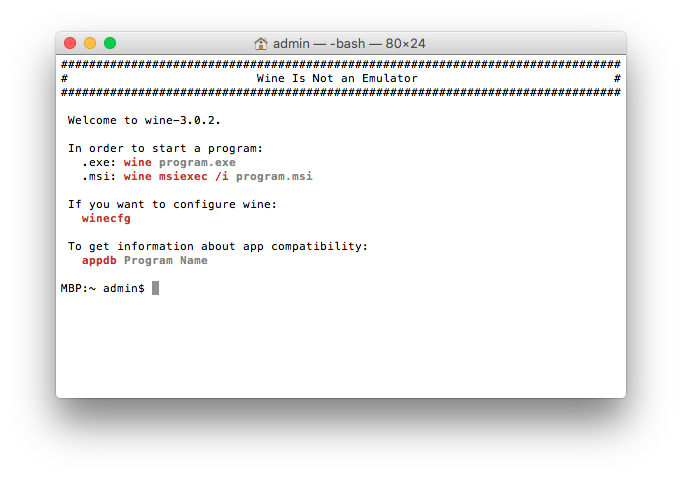
We've got a little bit of setup work to do now. First, type in:winecfg. This will bring up a few boxes while it executes asking to install Mono and Gecko packages. Click 'Install' to all like so:
Once it's complete, you'll have something like this:
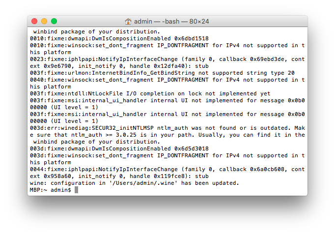
Next we need to set Wine up so it can find our version of eac3to. Enter:wine regeditand you'll get a new window open. In the Registry Editor:
- Expand HKEY_CURRENT_USER
- Highlight Environment
- On the main window, right-click and select 'New'
- Select 'String Value'
- Enter 'PATH' as the name
- Double-click your entry and enter "Z:\Users\[username]\Documents\eac3to" (note the backslashes, not forward slashes)
- Click 'OK' and close Registry Editor
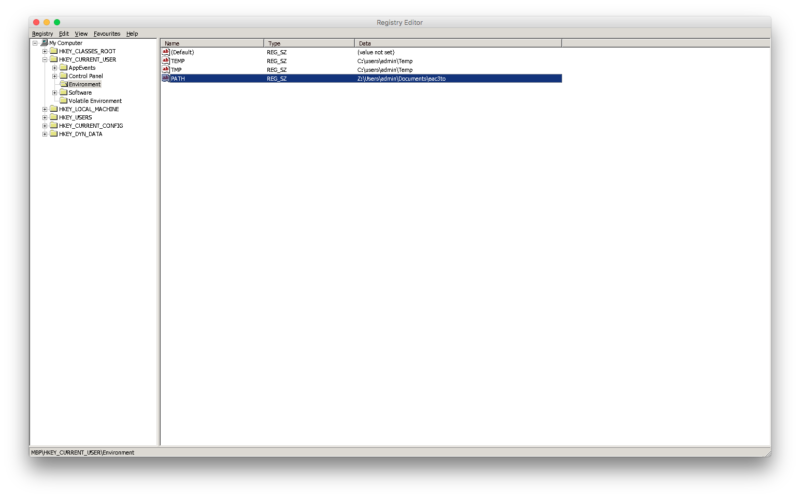
If you put the HANDJOB eac3to folder in another location, you'll need to change the path value accordingly. One final tweak involves suppressing some rather verbose warning messages that Wine likes to spit out. We don't need them, so in your Wine Terminal, enter:
You will be asked for your password here. When you type, it will not show any on-screen response until you hit Enter. This is normal. Since we've just entered a command which tells Wine to suppress warnings when it loads a Wine Terminal, you'll need to close and reopen 'Wine Stable' for this to take effect. Do that now.echo "export WINEDEBUG=-all" | sudo tee -a /private/etc/bashrc
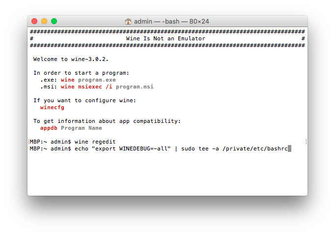
Everything should be ready to go now. To check everything's installed properly, we can enter:
wine qaac --check
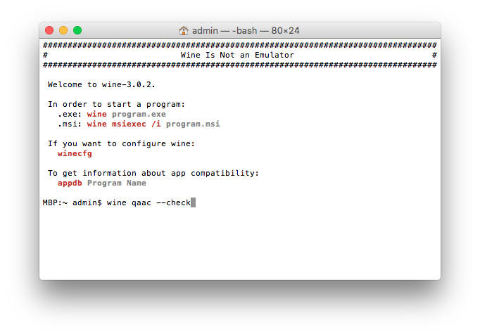
If everything is working properly, you should see the text below. If not, seek advice in the HANDJOB thread.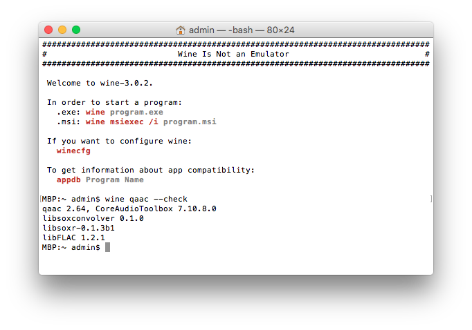
Ripping and Decrypting your Blu-Ray Disc: Show
Open MakeMKV and the program will automatically detect any discs in your Blu-Ray drive. Wait for it to load and then click the 'Backup Disc' button to start the process.
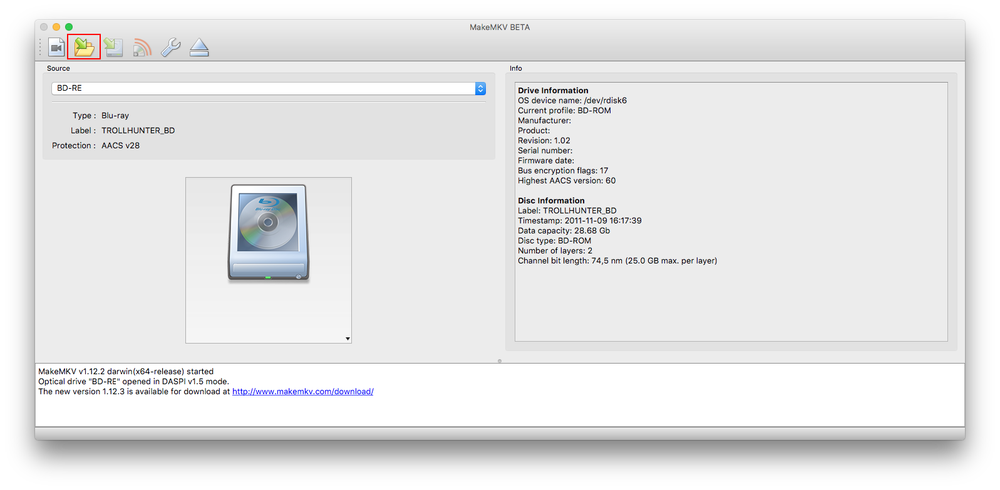
When the following window appears, choose to decrypt and select your output location:
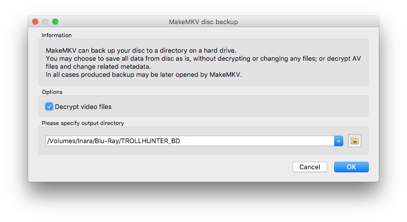
MakeMKV will now create a 1:1 copy of the Blu-Ray with all encryption defeated. This process make take a fair amount of time depending on the speed of your computer/optical drive.
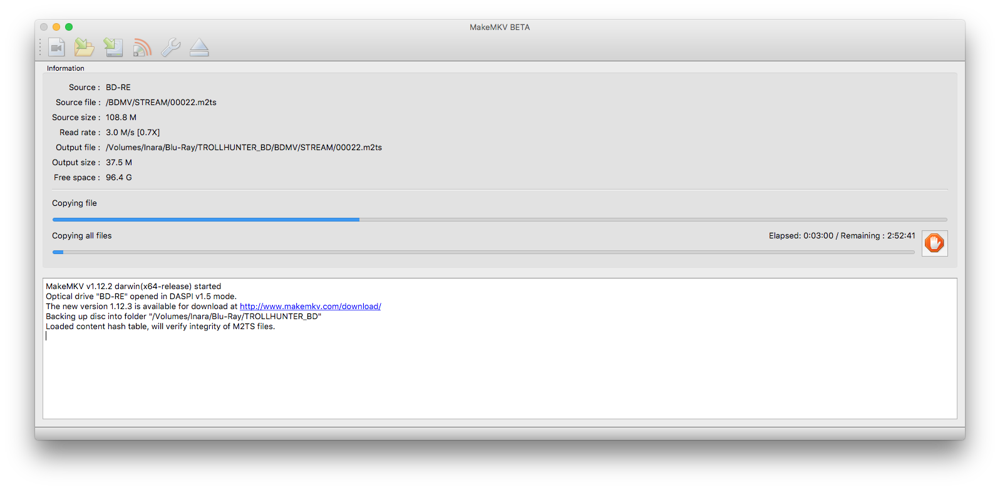
Setting up Handbrake:
- Take off the training wheels: Show
Install Handbrake and then load it up. After choosing your source (the remux you made with MakeMKV), click on the top menu and select 'Handbrake > Preferences'. You should then see this window:
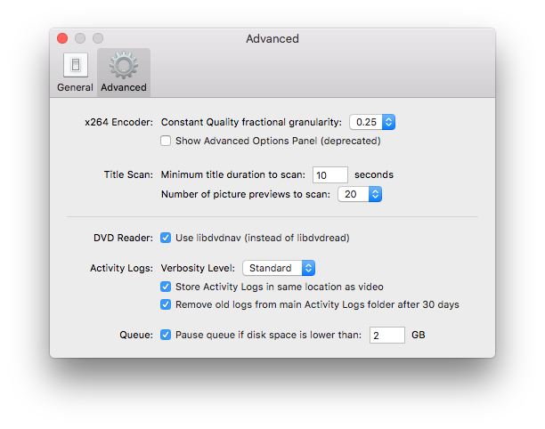Make yours look the same. - Switching to MKV mode: Show
On the 'Summary' tab, select 'MKV File' as your format. You can ignore everything else on this tab for the time being.
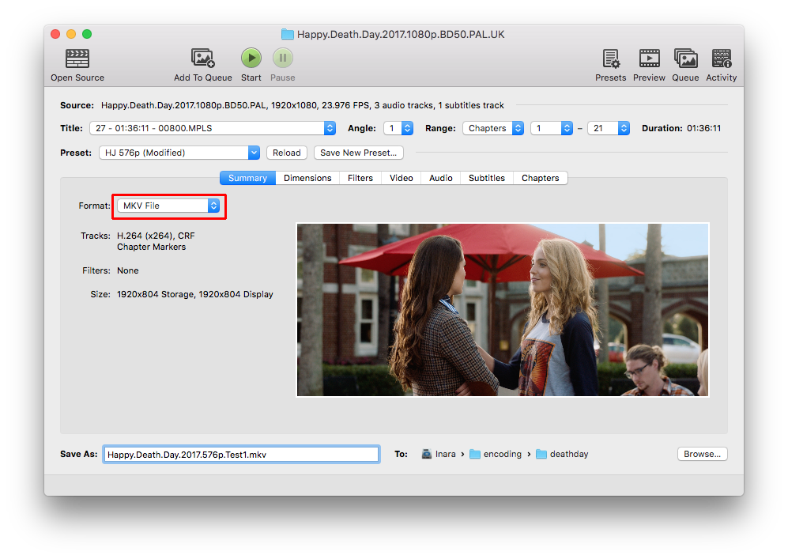 - Tab 1: Dimensions: ShowAs they're adjusted for each source, ignore the 'Storage Size' and 'Cropping' settings for now. In contrast with DVDs, Blu-Rays and other HD sources (HDTV, HD-DVD) do not often use anamorphic display, therefore we will be using the following when setting up our preset:• Anamorphic = Off• Modulus = 2
- Tab 2: Filters: Show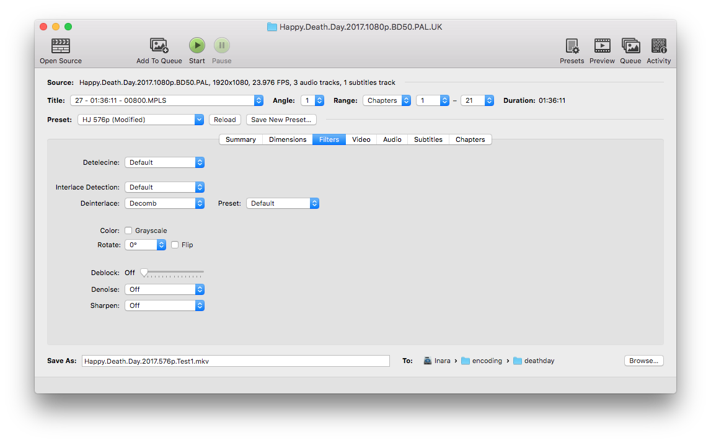This is what your filters tab should look like.• Detelecine = Default• Interlace Detection = Default• Deinterlace = Decomb-> Preset = Default• Colour: Greyscale [unchecked]• Rotate = 0º-> Flip: [unchecked]• Deblock = Off• Denoise = Off• Sharpen = OffYou may be able to safely set both Detelecine, Interlace Detection and Deinterlace to 'off', since most Blu-Ray sources do not use either telecining or interlacing. If you choose to do this, make sure to check each source before encoding. The deinterlacing settings illustrated above will be needed for 1080i sources.
- Tab 3: Video: Show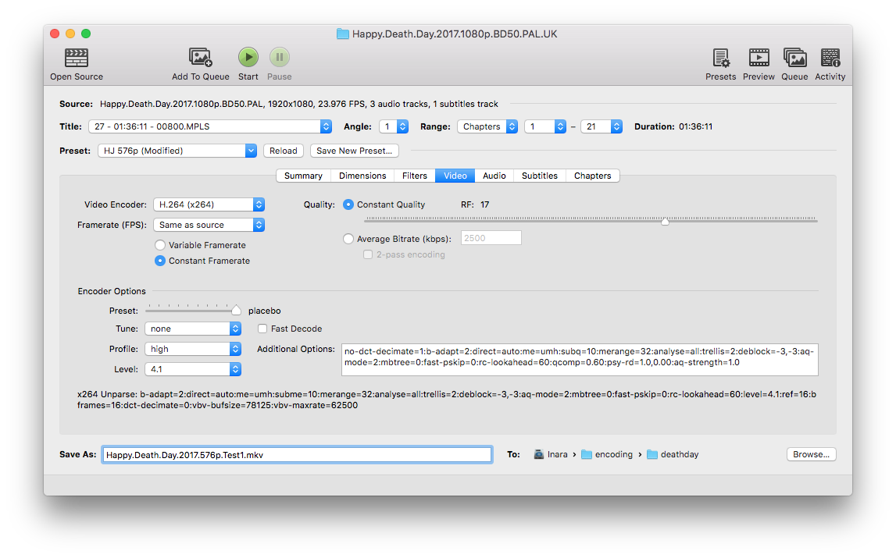This is what your video tab should look like for the time being. We may need to change the 'Constant Quality RF' value later on. Most encodes will use a value between 22-15. For now, 17 will suffice. This 'CRF' value has the most direct bearing on the quality of your encode. The higher the number, the more compression your encode will use. This means that CRF 20 will use more compression than CRF 19 and thus 20 will result in a smaller, albeit lower quality file than 19.The 'Additional Options' box has replaced the 'Advanced' tab from previous versions of Handbrake. After setting• Preset = Placebo• Tune = None• Profile = High• Level = 4.1paste the following into the box:
subme=10:deblock=-3,-3:me=umh:merange=32:mbtree=0:dct-decimate=0:fast-pskip=0:aq-mode=2:aq-strength=1.0:qcomp=0.60:psy-rd=1.0,0.00 - Tab 4: Audio: Show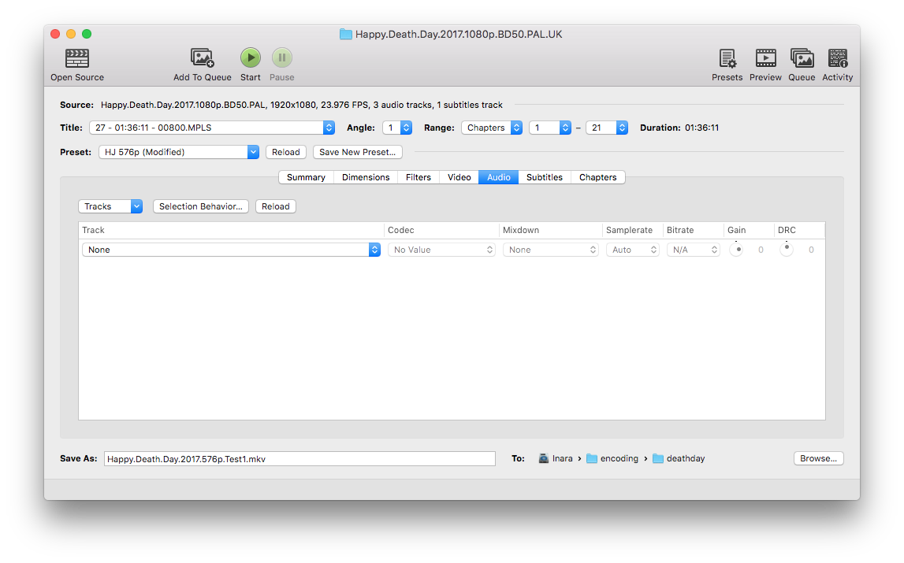At the time of writing, Handbrake has an issue encoding HD audio (DTS-HD / Dolby True-HD). These audio streams comprise two elements: the core stream, and the residual stream. We need to work with both combined (making it lossless audio), but Handbrake only allows us to work with the core stream (which is lossy). Therefore, we won't be using Handbrake to encode our audio.
- Tab 5: Subtitles: Show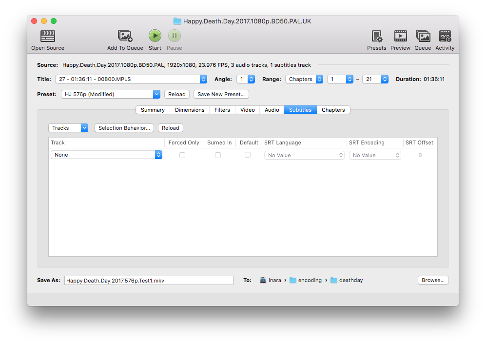You can leave this section blank, since we'll be using software other than Handbrake to process our subtitle tracks.
- Tab 6: Chapters: Show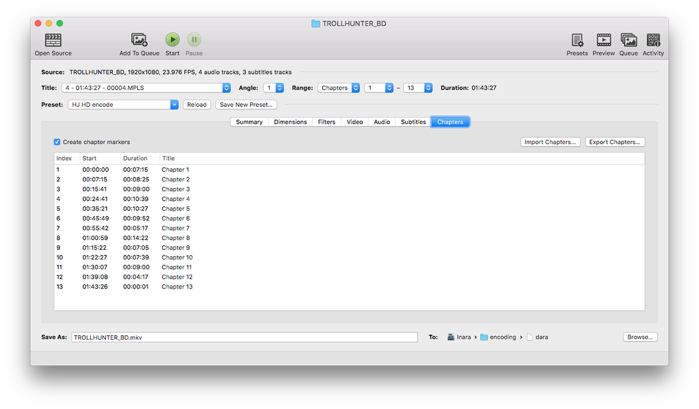
Does your Blu-Ray have chapter names? Check either at Chapter DB, bn.com or the old-fashioned way, by loading up your disc and checking the scene selection from the menu (you may be better off using a console or dedicated Blu-Ray player for this, but if you need to use a Mac for this, try Leawo Blu-Ray Player for Mac which has primitive support for Blu-Ray menus). If the chapters have names, we encourage you to enter them here. - Saving your Preset: Show
At this point, we've reached the end of configuring settings that we'll use for all HANDJOB HD encodes. Therefore it will be useful to save these as a preset in Handbrake.
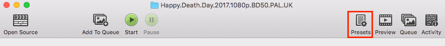Hit the 'Preset' button on the main Handbrake window (above) and then the + button on the window that opens.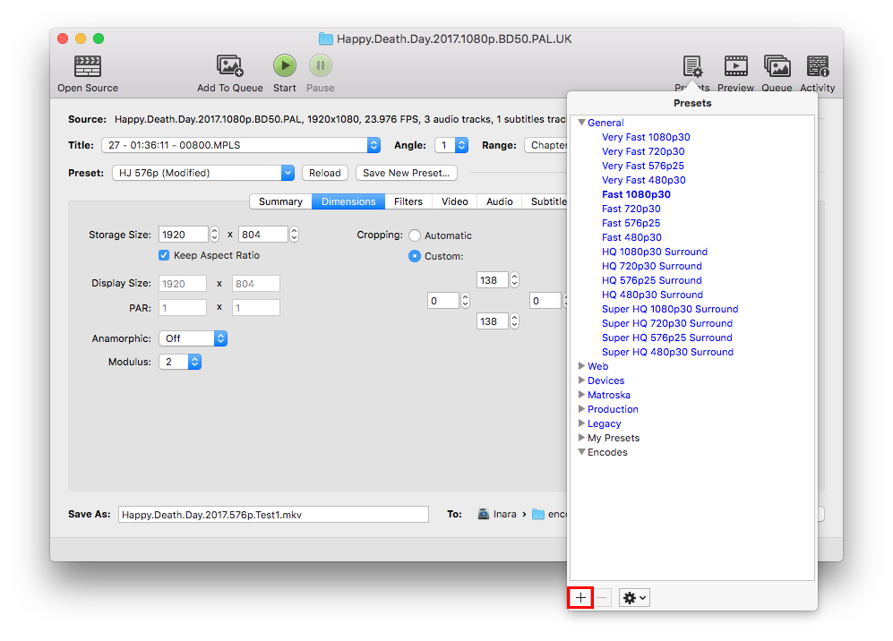Now give your preset a name, leave the 'Picture Size' as source maximum and click 'Add'.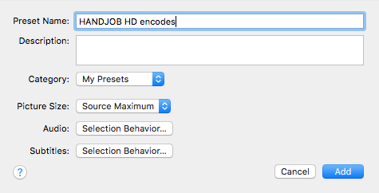When you come to set up future encodes, simply select your saved preset after loading your source in Handbrake. You can then jump straight to setting up the cropping and resolution. - Cropping: Show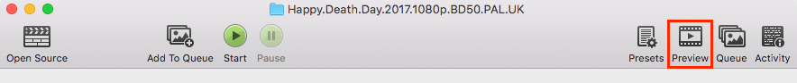If you hit the 'Preview' icon (above) on the main Handbrake window, this will give you a pop-up window showing a preview of what your final encode will look like. You may need to click through a few different preview images to find ones that give you some brightly-coloured pixels on each edge of the frame. This will make it easier to see if we've got any black or discoloured pixels that we need to crop.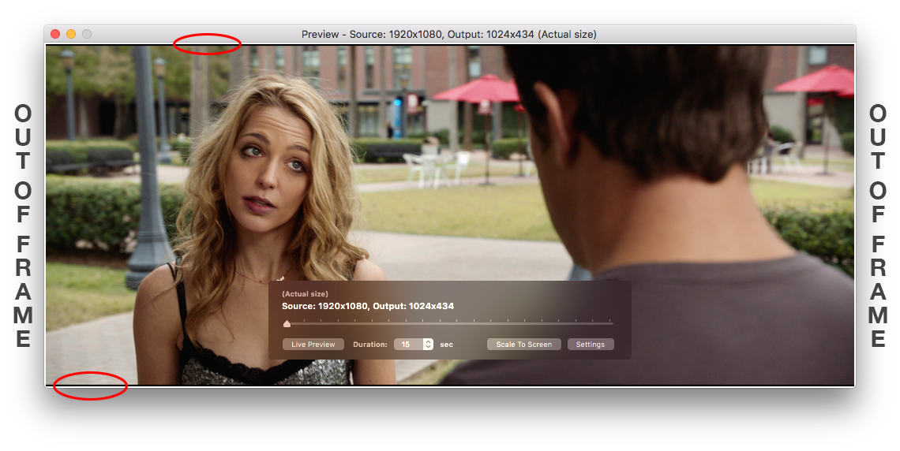The aim of cropping is to have the edge pixels on each side of your encode's frames be a clean pixel line. In this regard, Handbrake's 'Auto Cropping' mode doesn't always get it right, so we recommend always using 'Custom' mode when cropping. Bear in mind that the frame may shift throughout the source's runtime, so be sure to verify whether or not this is the case by checking as many of the preview screenshots as possible. Some features (especially extras) may even use completely different aspect ratios during different sections. Once you've checked that, pay careful attention to the edges of the frame. As you can see in the image above, there are some black pixel lines on the top and bottom of the frame. We will need to adjust our settings to remove these.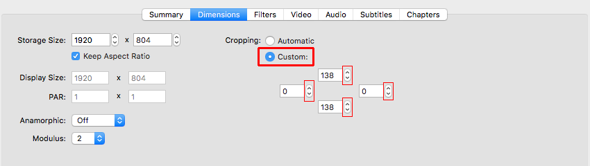Change the cropping mode to 'custom', check the 'Keep Aspect Ration' box and then increase the numbers until the frame is properly cropped. If in doubt about what to crop, ask. And whatever you do: only crop in even numbers. After you're finished, you should be left with something like this: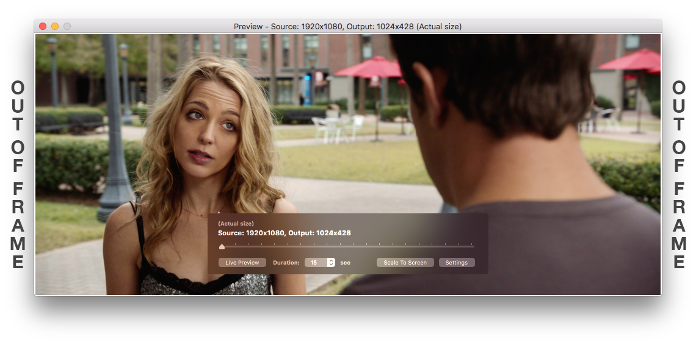Recent versions of Handbrake have developed a bug/unexpected feature wherein if you increase the number of pixels you are cropping, then later decrease that number, the storage size will not increase back up to 1920 (for width adjustments) or 1080 (for height adjustments). This shouldn't affect you if you're setting up 720p, 576p or 480p encodes. If you spot that your 'Storage Size' does not equal 1920 or 1080 minus your cropping measurements for a 1080p encode, you may need to manually re-enter 1920 in the width box for 'Storage Size'. This should reset the calculated dimensions.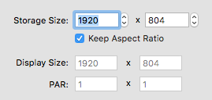
- Choosing Your Resolution: Show
While we never resize DVD encodes, we can for BluRay encodes. The four resolution encodes you can produce are: 480p, 576p, 720p and 1080p. First of all, familiarise yourself with the maximum width/height measurements for each resolution:
480p: 854 x 480576p: 1024 x 576720p: 1280 x 7201080p: 1920 x 1080Now remember these two golden rules for choosing the correct width and height for your encode:.1.) Neither your width, nor your height should exceed the maximum for your chosen resolution2.) At least one should equal the maximum for your chosen resolution *.* Note: you can disregard this rule for 1080p encodes, since cropping might put both measurements below the maximum, this is fine. Under no circumstances should you stretch (upscale) the 1080p encode's dimensions.For example, all of the following are 576p encodes:774 x 576 (4:3 Aspect Ratio) - 576p Encode1024 x 426 (2.40:1 Aspect Ratio) - 576p Encode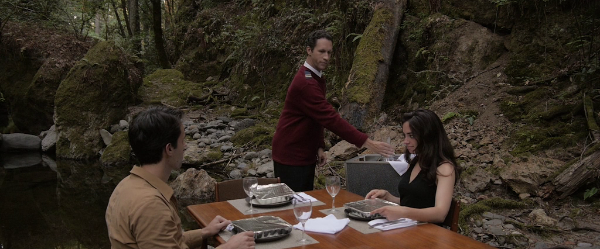1024 x 576 (16:9 Aspect Ratio) - 576p EncodeFor the purposes of this example, we're going to encode at 720p (maximum dimensions: 1280 x 720), so head back to your 'Dimensions' tab and enter your new resolution.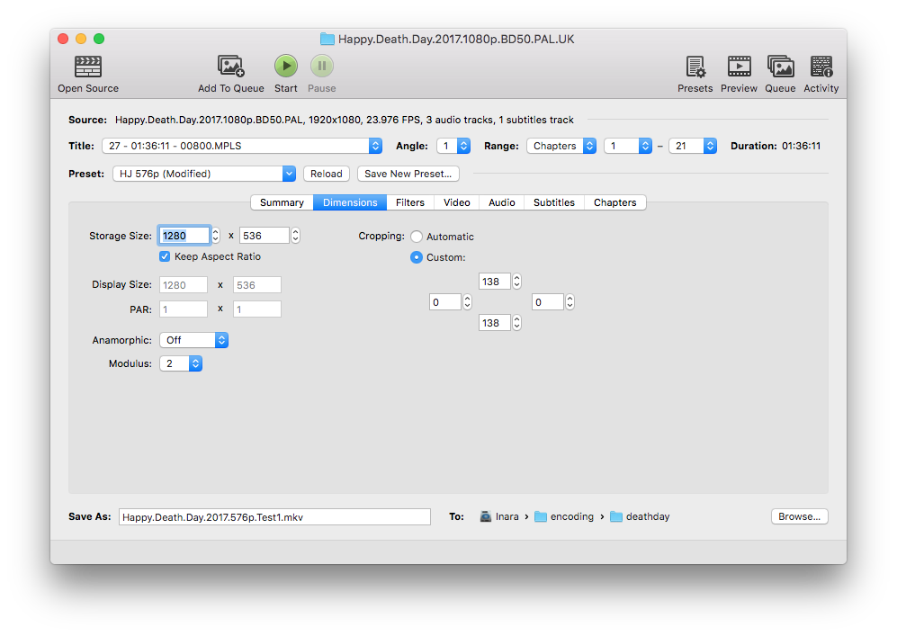Since selecting a height of 720 would put the width at 1720, this would break rule #1 above. Hence, we've chosen 1280px in width, which sets our height to 536px. This means that at least one of our dimensions (in this case the width) is equal to the maximum, and neither exceeds it.
Act 2: testing and encoding
- Test encode: Show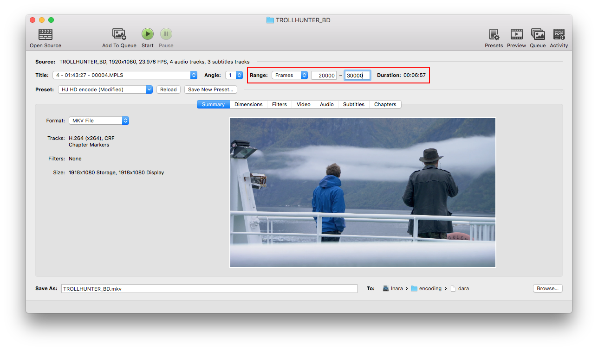Now we're going to encode a short section of the film. Although you can select a larger number if you wish, 10,000 frames usually gives us enough data to work with [see above]. We're starting 20,000 frames in because this ensures that we aren't encoding the opening credits. Once you've chosen your frame range, select 'Start' and the test encode will begin.
- Calculating B-Frames: Show
This step is optional. Handbrake will use 16 b-frames by default if you don't specify otherwise. Those with slower computers or time constraints may find it useful to manually cap the number of b-frames used by Handbrake. After running the test encode above, hit the 'Activity' button:
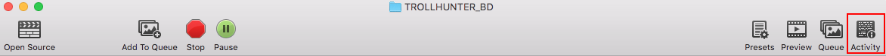Scroll down to the bottom of the window that appears and look for the line beginning:x264 [info]: consecutive B-frames:Now count along the numbers, starting with 0, until you find the last one with a value of 1% or higher: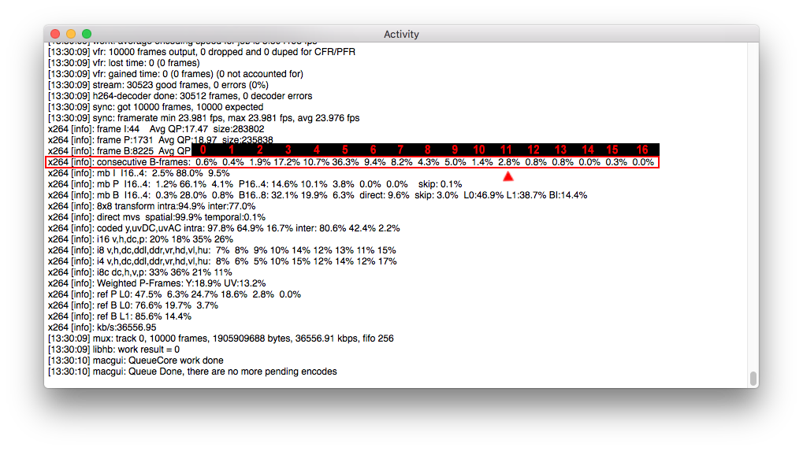So in the example above, we would use 11 b-frames. You'll need to add this to your 'Additional Options' string in the 'Video' tab as shown below.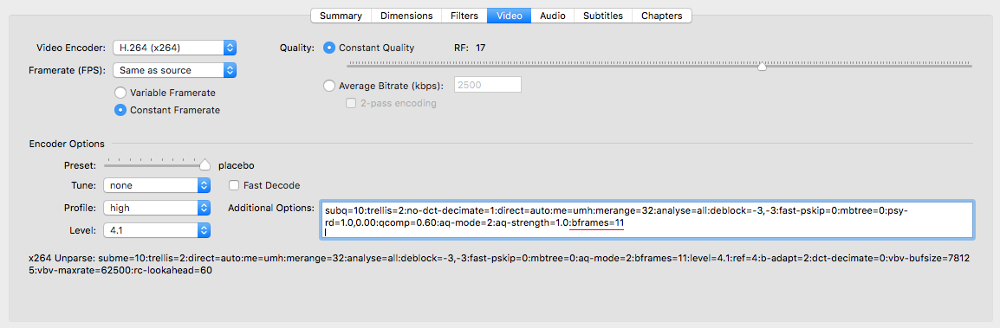Note: Even if your data tells you otherwise, you should never use a maximum b-frames value lower than 5. - Checking your bitrate: Show
Once your test encode is complete, we need to see what its video bitrate is. This is the average measurement for how much data is required to render your video each second. The bitrate range we're targetting will vary based on what resolution encode we're doing. You can find these in the 'Quick Reference' part of the Wiki > The HANDJOB Guide. For convenience, we'll reproduce them below.
480p: 1,500 - 2,500 Kbps576p: 2,000 - 4,000 Kbps720p: 5,000 - 7,000 Kbps1080p: 8,000 - 12,000 Kbps (aka 12 Mbps)[Note: These are only rough estimates applicable to blind encoding of live-action films. If you're testing encodes and using screenshot comparisons (not covered in this guide) or if you are encoding an animated film then you should ask in the HANDJOB thread for more specific information and guidance.]To find out the bitrate of our test encode, first load up Mediainfo, then open (or drag and drop) your test encode file. This will tell us what we need to know, as illustrated below (we've selected 'Tree' mode from the 'View' menu):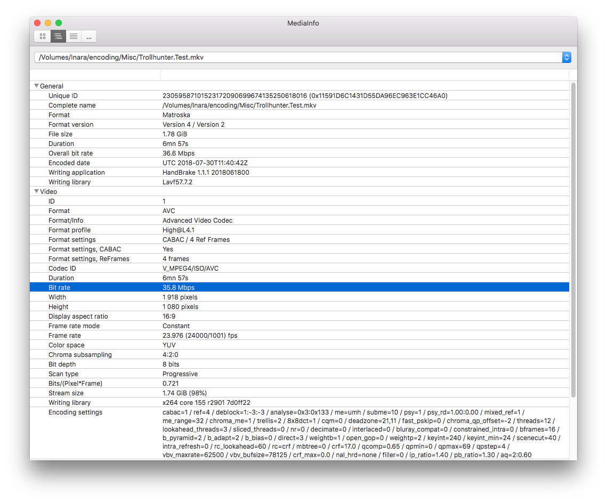As you can see above in the 'Video' section, this test came in at 35.8 Mbps, which is hilariously above our desired range for a 1080p encode. Therefore, in this case, we'll be needing to run another test encode with a higher CRF. If you're quite close to your desired bitrate range, you can use an educated guess in choosing a CRF for the entire film. Below is our second attempt: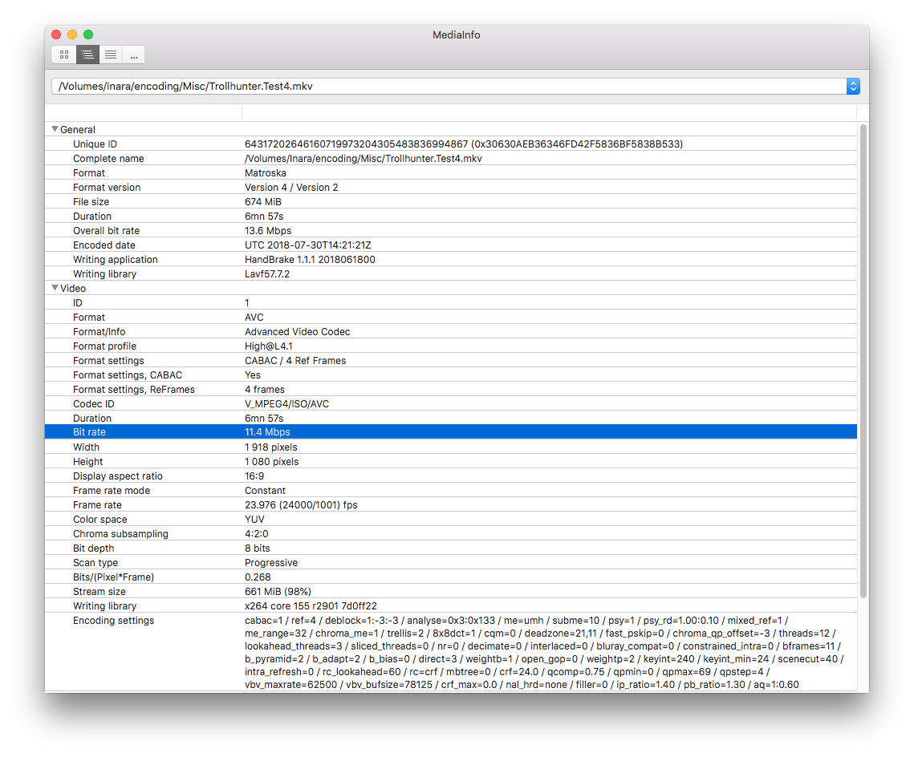You can see now that we've got a video bitrate of 11.4 Mbps. This is now within our target bitrate range of 8-12,000 Kbps for 1080p. Hopefully, these settings should result in a similar bitrate for our final encode.Note: If your encode has an AAC audio track (like the commentary track from our example), your video bitrate may not appear. If this happens, try upgrading to the latest versions of Mediainfo and MKVToolNix. If it still doesn't display, drop your encode in MKVToolNix, uncheck 'Global Tags' and then run another mux of your encode.Note 2: Bitrate can vary drastically between different parts of a film. Just because you get an acceptable bitrate in your test encode doesn't guarantee that your encode of the entire film will have a bitrate with a similar figure. To be extra sure, try another test encode or two, selecting a different range of frames for each one (perhaps frames 60,000 - 70,000 and/or frames 100,000 - 115,000). - Using the correct frame-rate: Show
Usually, for BluRay encodes, there will be no need to change the frame-rate from 'same as source' and 'constant' on the 'Video' tab. However, just in case, we'll reproduce the following section of the DVD encoding guide:
If you remember, on Handbrake under the 'Video' tab, there was a section with a couple of options under 'Framerate (FPS)'. This is the number of still images which are played during a second of video so as to create the impression of movement. Unfortunately, there is a great deal of variation between formats and also between regions when it comes to video framerate. To make things easier, forget that button for 'Variable Framerate' exists on Handbrake. We will never be using it. The dropdown box which we selected 'Same as Source' from is one we might need to use on rare occasions.NTSC format, the one used in North American territories (amongst others) can sometimes give us 'duplicate frames'. So if you're encoding a PAL DVD – which runs at 25fps – (Europe et al.), this does not apply. Load your test encode up in Mediainfo again, and see what your framerate is...If it says your framerate is like above (29.970fps) then we need to test for duplicate frames. If it says your framerate is something else, run this test anyway, just in case something else is wrong. So load your test encode (not the source) into VLC, find a scene with visible motion in, and pause the film. Then, we can use the 'e' key to move forward one frame at a time. We need to make sure that every time we press 'e', we get a new frame (something moves or changes). Check at least 20-30 consecutive frames to be sure there are no duplicates. On occasion though, you might get the pattern below (Click 'show comparison' and move your mouse from left to right to simulate a frame-by-frame advance)..._files/k7086j.png) Frame 1, Frame 2, Frame 3, Frame 4, Frame 5, Frame 6, Frame 7: Show comparison... If – and only if – you get the same pattern as above (a duplicate frame on every fifth frame), then we need to change something for this source. So move back to Handbrake and select the 'Video' tab. Then you need to change the FPS from 'Same as Source' to '23.976' as shown below. 'Constant Framerate' should always be used.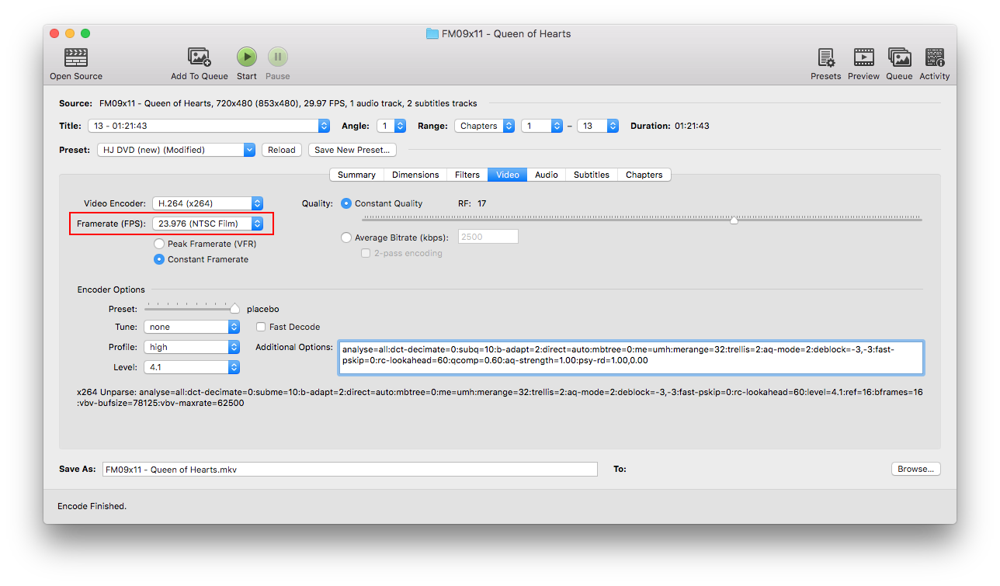After you've changed that, or if you had no duplicate frames, carry on to the next step. If you get duplicate frames in a different pattern than the one outlined above, seek advice before going any further.
Frame 1, Frame 2, Frame 3, Frame 4, Frame 5, Frame 6, Frame 7: Show comparison... If – and only if – you get the same pattern as above (a duplicate frame on every fifth frame), then we need to change something for this source. So move back to Handbrake and select the 'Video' tab. Then you need to change the FPS from 'Same as Source' to '23.976' as shown below. 'Constant Framerate' should always be used.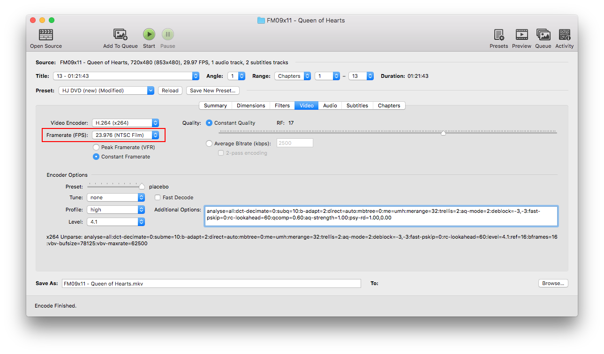After you've changed that, or if you had no duplicate frames, carry on to the next step. If you get duplicate frames in a different pattern than the one outlined above, seek advice before going any further. - Running your encode: Show
Once you have an appropriate CRF value from testing, go back to Handbrake and select it. Double check all your settings, making sure that all of the available audio commentaries are included (at 96 Kbps AAC/Vorbis or less). Navigate back to the 'Video' tab, change your encoding range-type from 'Frames' to 'Chapters' and ensure that the whole film is selected (Chapter 1 through to the final chapter). Hit 'Start' and then prepare for a long wait. Higher resolution BluRay encodes take significantly longer than DVDRips, so be prepared for a long wait. Some encoders have reported that slower machines could take well over 30 hours for a full encode in high definition.
Act 3: audio, subtitles and muxing
- Encoding audio and extracting subtitles with eac3to: Show
If you haven't already, follow the section 'Setting up Wine and eac3to'. You should now have the software needed to both encode your audio tracks, as well as extracting subtitle tracks. Working with Windows software in a MacOS Wine Terminal can be tricky when it comes to filenames. If in doubt as to what the Windows-compatible file-path is for your folders or files, enter
winepaththen drag/drop the file onto the Wine Terminal and then type-w. The terminal window will then show you the appropriate Wine-compatible file-path. For example: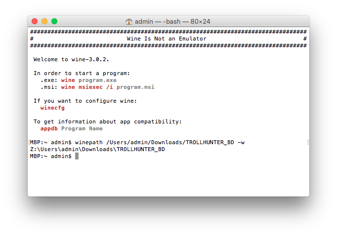Now that we've got our file-path, we can enter the following:When passing file-paths to eac3to with Wine, you will need to put them inside quotation marks as above. Eac3to will now scan the folder/file for playlists or streams. If there isn't a playlist menu, the next skip will be skipped:wine eac3to "Z:\Path\To\BluRayFolder\or\Remux"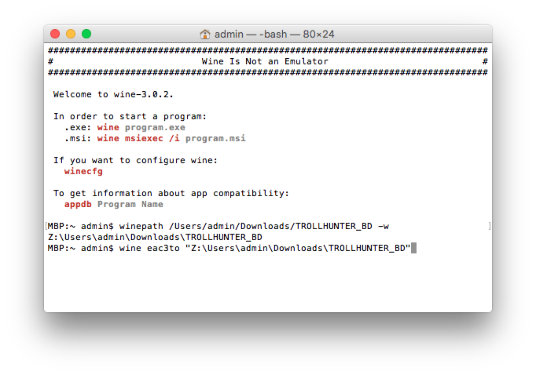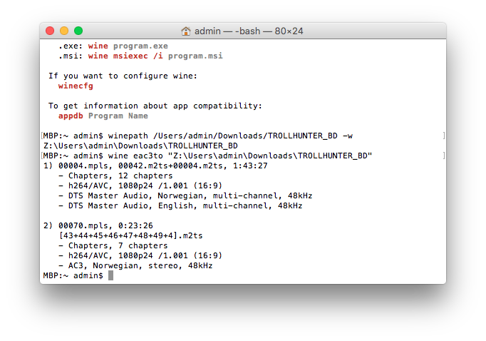Above we can see that the Blu-Ray folder contains two playlists. The second is only 23 minutes long, whereas the first is 1:43:27 (our main feature). If you press the ↑ (up) cursor key on your keyboard, the terminal will re-enter you previous command. Do this, then add1\)afterwards. This tells eac3to to load the streams from the first playlist. We put a backslash (\) before the closing bracket to tell Wine that this is not a special character (known as escaping).wine eac3to "Z:\Path\To\BluRayFolder\or\Remux" 1\)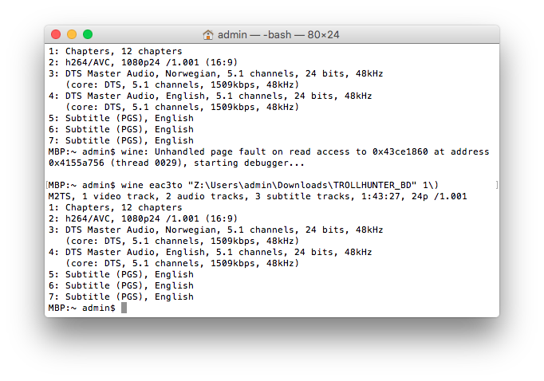For the purpose of this guide, we're going to use absolute paths when referring to file locations, but it's perfectly possible to use thecdcomand to change directory and then simply use relative filenames.Encoding Surround Audio with Dolby AC3If your source audio is 5.1+ channels, then you will likely want to encode using the AC3 codec. Consult the 'Quick Reference' section of Wiki > The HANDJOB Guide for audio specs for your individual encode. Generally speaking, we'll use 448 Kbps for SD encodes (480p and 576p) and 640 Kbps for HD encodes (720p and 1080p). If your source audio is stereo or mono, see the AAC section below. If you'd prefer to use FLAC (such as for lossless 1080p audio, or concerts/musicals), see the FLAC section below.In the stream list we got above, you can see we have two audio tracks: the original language audio (Norwegian) and an English dub. Therefore, we're going to do a 'Dual Audio' encode. English language films should only have one main audio track. You should not include any non-English dubs. If your source has audio commentaries, first follow the steps here for main audio, then see the section on encoding commentaries below.Press the ↑ (up) cursor key to retrieve your last command, and now add the track number of the audio you want to encode followed by a colon ( : ). Next add the location where you'd like the audio file to be created. Finally, add a hyphen ( - ) and the bitrate you would like to encode at. So for example:wine eac3to "Z:\Path\To\BluRayFolder\or\Remux" 1\) 3:"Z:\Path\To\Output.ac3" -448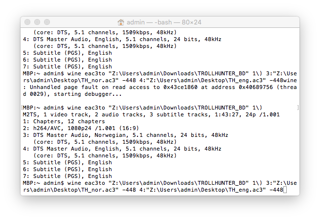In the image above, you can see we done both audio tracks for our 'Dual Audio' encode at the same time. You will likely just be doing one main audio track. After you enter the command, eac3to will then encode your audio track for you. This can take a while depending upon the speed of your computer: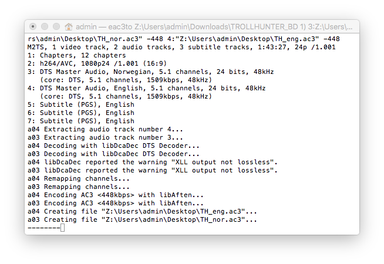Encoding Mono/Stereo Audio with QAAC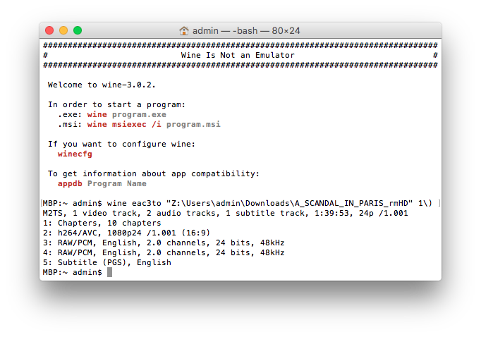When dealing with mono or stereo audio (which we have in the image above), we get better results if we encode with the AAC codec. To do this, we're going to use a eac3to and qaac together. Follow the steps above to find the playlist and stream number you want to encode. Next we will get eac3to to losslessly encode it to .wav, before sending (or piping) the wav file to qaac to encode to AAC. We're going to use variable bitrate mode, so don't work if your final bitrate comes out differently to ours or your previous encodes. We can do this whole task in one command, see the following for example:wine eac3to "Z:\Path\To\BluRayFolder\or\Remux" 1\) 3:"stdout.wav" | wine qaac -V 127 -i --no-delay -o "Z:\Path\To\Output.m4a" -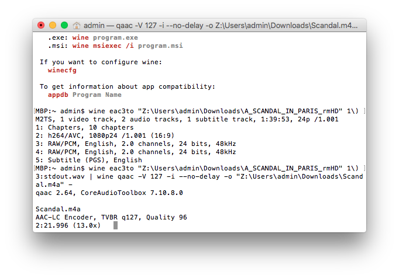Coverting Main Audio to FLACIf you want lossless audio in your 1080p encode, or you're encoding a concert or musical, you will need to convert the audio to FLAC. If your source audio is has a bit depth of 16 and sample rate of 48 kHz, this is a fairly simple command. If your source audio is 24 bits and/or 96+ kHz, skip to the next subheading. Here's where to find that information: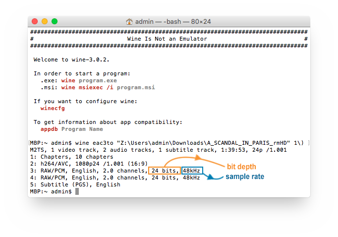If, unlike ours above, your audio is 16 bits and 48 kHz, simply enter the following into your Wine Terminal:wine eac3to "Z:\Path\To\BluRayFolder\or\Remux" 1\) 3:"Z:\Path\to\Output\audio.flac"Converting to FLAC with DownsamplingIf you want to convert to FLAC, your bit-depth is 16, but your sample rate is 96 kHz or above, you can use eac3to to downsample it. Simply enter:wine eac3to "Z:\Path\To\BluRayFolder\or\Remux" 1\) 3:"Z:\Path\to\Output\audio.flac" -resampleTo48000Converting to FLAC with Bit-Depth ReductionIf you want to FLAC your main audio and bring the bit-depth down to 16 bits, you will be using a pipe with a program called SoX. You can still do all this from your Wine Terminal, simply enter the following command:wine eac3to "Z:\Path\To\BluRayFolder\or\Remux" 1\) 3:"stdout.flac" | wine sox -V --ignore-length -G -e signed -t flac - -b 16 -t flac "Z:\Path\to\Output\audio.flac" rate 48k dither -s -f low-shibata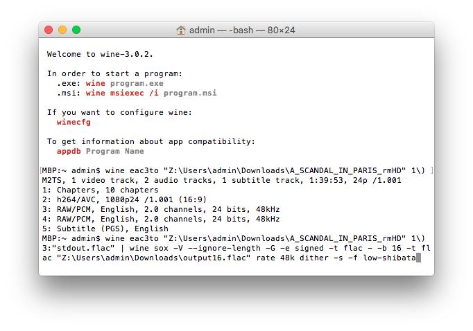By reducing the bit-depth to 16 bits, it allows you to save huge amounts on file size with very little impact on perceivable quality. SoX will also apply a process called 'dithering' which prevents a type of distortion that can result while reducing the bit-depth. This process can take a while depending upon the speed of your computer.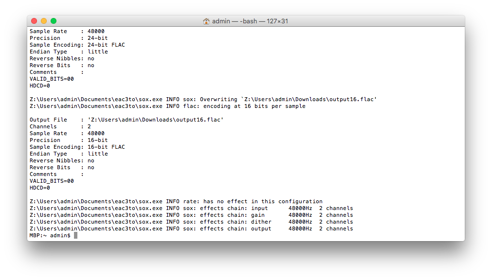On the rare occasion that your sample rate is less than 48k, you will need to deleterate 48kfrom your Wine Terminal command.Encoding Audio Commentaries with QAACSince audio commentaries are secondary audio, we're allowed to transcode them (convert from lossy source to lossy). Because they generally contain only dialogue, we can also compress them to a greater degree. In HANDJOB, we use AAC at 96 Kbps or below for commentaries. Once more, we're going to turn to qaac to encode to AAC, but this time, with a lower quality setting.wine eac3to "Z:\Path\To\BluRayFolder\or\Remux" 1\) 4:"stdout.wav" | wine qaac -V 63 -i --no-delay -o "Z:\Path\To\commentary.m4a" -_files/548tby.png) Extracting Subtitle filesThere are two ways to extract your subtitle streams using eac3to. The first is the long, easy way: useful if there are lots of subtitle tracks. For this, add
Extracting Subtitle filesThere are two ways to extract your subtitle streams using eac3to. The first is the long, easy way: useful if there are lots of subtitle tracks. For this, add-demuxto your command after identifying the source and playlist (if present).wine eac3to "Z:\Path\To\BluRayFolder\or\Remux" 1\) -demux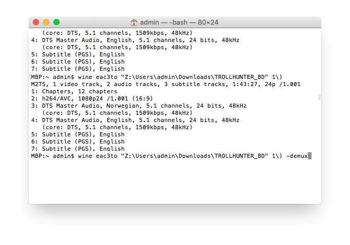This will extract everything: video, audio, and subtitle streams. These files will then be placed in the same location as the source.Option two is more surgical. Like our audio encoding, this involves entering a track ID (followed by a : ), and then designating where the file should go.wine eac3to "Z:\Path\To\BluRayFolder\or\Remux" 1\) 5:"Z:\Path\to\Output\English.sup" 6:"Z:\Path\to\Output\English2.sup" 7:"Z:\Path\to\Output\English3.sup"Some sources may have multiple subtitle tracks of the same language. You will likely be best placed to verify their nature (some are for hard of hearing, some translate on-screen text only, others translate commentaries) after extracting them and importing them into either SupRip or BDSup2Sub. - SRT subtitles... why?: Show
As you may have noticed, we've already got all of the subtitles extracted in our working folder, so why this extra step? Subtitles ripped from the Blu-Ray discs are not stored as a text file, but as a series of images which are overlaid on the video. Converting them to SRT (text) format through a process called OCR-ing (Optical Character Recognition) offers us two main advantages:
.(1) The subtitles take up much less space, giving you a more efficient encode(2) As images, neither the placement, the size, the font or the colour of the subtitles is changeable. SRT files therefore give the viewer more individualised control - Subtitles Episode I: Optical Character Recognition: Show
HANDJOB generally recommends that you at least OCR any English subtitle tracks. Some people choose to OCR other Latin-based languages such as French, German, Spanish, Italian, Dutch etc. If you're not familiar with other writing systems such as Cyrillic (Russian, Bulgarian, Ukrainian), Arabic, or Chinese, then we suggest not attempting to OCR those subtitle tracks.
Start by opening the SupRip winebottle that we created earlier. When the main screen loads, click 'Open' and find the .sup files that eac3to extracted earlier, as shown below.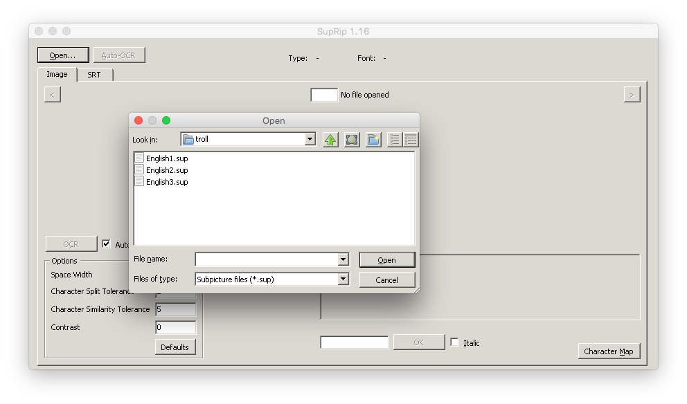This will load the .sup file and display the first subtitle image. Click 'OCR' and wait for the program to prompt you with a letter it doesn't recognise. Enter the letter in the text box (clicking 'Italic' if appropriate) and then hit 'OK'.Here you're teaching the program to recognise letters from the images. As you enter more, the program will become better at recognising the correct letters itself. Keep doing this until SupRip finishes the entire subtitle track. When you've finished, click the 'SRT' tab as shown below.Next, you'll need to check the options shown below and click 'Save'.Finally, name your .srt track. Try to be as descriptive as possible in the filename, since this can get confusing if you're dealing with a lot of subtitle tracks.Your first subtitle track is now complete. Repeat this process for as many of the languages available in which you feel comfortable. If you've previously followed the Wiki > The HANDJOB Guide to DVDRips for Mac (Beginner Friendly) and you have a winebottle installation of SubRip available, you might want to load your .srt file with that and run the post-OCR corrections as shown below.The final step is to run a spell-checker on your .srt file. If you don't have a favourite, we recommend BBEdit, which offers its basic word-processing features for free, always, with no nag screens. - Subtitles Episode II: Resizing the SUPs: Show
For those languages that you didn't feel comfortable OCR-ing, we still need to include them in our final encode. However, if you're encoding at 480p, 576p or 720p, you might begin to see the problem in using image-based subtitles which are sized for a 1080p display. Yes, we need to resize them. For this, we'll use the Java-based BDSup2Sub (install Java if you haven't already). Since we only had an English subtitle to work with in our example film, we'll resize that for illustrative purposes. Open BDSup2Sub and load your .sup file.When your .sup file has been imported, an options menu should automatically display. Choose 'Convert Resolution' and then the required size. If you're doing a 480p, select 'NTSC'; if 576p, select 'PAL' from the drop-down menu.Now, make sure that you've selected 'Sup(BD)' as the 'Output Format' (as below):Then, finally, select 'File -> Export' and choose your destination for the resized subtitle track. It will be useful if you give it a descriptive filename. Repeat this process for as many subtitle tracks as you wish to resize.
. - Putting it all together: ShowBy this point, you've likely got a folder of various video, audio and subtitle files all waiting to be combined into one encode, much like in our folder above. To combine all of these, we're going to be using MKVToolNix (see software). Once installed, launch MKVToolNix and drag your Handbrake encode, your main audio (and English Dub if applicable), and all available subtitles (either in .srt, or .sup format) onto the MKVToolNix file window.
_files/z5civ6.png) Drag your main audio track into second position on the stream window (as below), and set it as 'Default = Yes' and the appropriate language tag.
Drag your main audio track into second position on the stream window (as below), and set it as 'Default = Yes' and the appropriate language tag._files/33h4jh.png) Our example film includes a commentary track, so we're going to give this a descriptive title (Commentary with [job title] [Name] [Surname]). Since we don't want this audio track to play automatically, we'll also set 'Default = No'.
Our example film includes a commentary track, so we're going to give this a descriptive title (Commentary with [job title] [Name] [Surname]). Since we don't want this audio track to play automatically, we'll also set 'Default = No'._files/8fw9qu.png) Next, we want to uncheck 'Global Tags' and highlight the subtitle track. We need to set title, language, and default settings for each subtitle track we've included. Since this is an English language film, we don't need English subtitles to appear automatically, so we can set 'Default = No'. If you're in doubt about which audio/subtitles to set as default, consult the chart in the 'Post-Credits' section of this guide ('Have I got my audio and subtitles set up correctly?').For our final step, we need to navigate to the 'Output' tab on MKVToolNix. In this tab, we need to do two things: (1) Set our filename; and (2) Set our metatitle. We'll discuss the rules behind naming in the next section ('Giving it a name'), but for the time time being, illustrated below is where this information goes: the metatitle under 'General -> File Title' and the filename under 'Destination File'. Once you've correctly set both, you can 'Start Multiplexing' (commonly abbreviated to 'muxing' by encoders).
Next, we want to uncheck 'Global Tags' and highlight the subtitle track. We need to set title, language, and default settings for each subtitle track we've included. Since this is an English language film, we don't need English subtitles to appear automatically, so we can set 'Default = No'. If you're in doubt about which audio/subtitles to set as default, consult the chart in the 'Post-Credits' section of this guide ('Have I got my audio and subtitles set up correctly?').For our final step, we need to navigate to the 'Output' tab on MKVToolNix. In this tab, we need to do two things: (1) Set our filename; and (2) Set our metatitle. We'll discuss the rules behind naming in the next section ('Giving it a name'), but for the time time being, illustrated below is where this information goes: the metatitle under 'General -> File Title' and the filename under 'Destination File'. Once you've correctly set both, you can 'Start Multiplexing' (commonly abbreviated to 'muxing' by encoders). - Giving it a name: ShowPart 1: Filename.Friday.the.13th.2009.Extended.576p.BluRay.x264-HANDJOB.mkv.This is what one example of what a HANDJOB filename might look like. More detailed information regarding file-naming can be found in the HANDJOB thread's first post under 'Quick Reference' and 'FAQ -> Other -> What filename should I use?'. But here's how our example breaks down:.[English.Title].[Year].[Edition.Info].[Resolution].[Source].[Audio.Codec].[Video.Codec]-[Group.Tag].mkv.Some rules:.(1) Filenames should only contain alpha-numeric characters, that is letters and numbers. Full stops/periods and hyphens may also be used, but no apostrophes, no accented letters and no (semi)-colons etc.(2) In the title, we don't capitalise prepositions comprising four or fewer letters (e.g. for, of, to, on, in), or conjunctions (e.g. and, but, or). (In)definite articles (i.e. the, a, an, this, that) are also not capitalised unless they're the first word of the title or subtitle. Generally speaking, the title atop the PTP torrent page should be regarded as correct.(3) If a non-English film, you can include the original title like so: [Original.Title].AKA.[English.Title].[Year]...(4) Edition information might include: Directors.Cut; Criterion.Edition; Unrated; Open.Matte; Extended.Edition; Uncut and so on. There is no need to use this tag if your encode is the theatrical version.(5) The year is the year of original theatrical release, as stated on the IMDb page and the PTP torrent page(6) Other HD source codes include: HDTV and HD-DVD.(7) Only note the audio codec if the main audio is not AC3. Examples might include: FLAC, DTS or AAC..Some examples:Back.to.the.Future.1985.1080p.BluRay.DTS.x264-HANDJOB.mkvStar.Wars.Episode.VI.Return.of.the.Jedi.1983.480p.BluRay.x264-HANDJOB.mkvTrois.Couleurs.Bleu.AKA.Three.Colours.Blue.1993.576p.BluRay.x264-HANDJOB.mkvThe.Woman.in.White.E03.1982.DVDRip.x264-HANDJOB.mkvPart 2: MetatitleYour metadata title is the one which is generally displayed to the viewer when they play your encode, therefore it is important that it's as informative and professional-looking as possible. It is also not subject to the limitations placed upon filename titling (using only alphanumeric characters). For example:Titling Convention:
The titling convention used by HANDJOB is:Some working examples might include:English Title [Year] Resolution Source - HJ
There are two main ways to title your encode using MKVToolNix:Standard DVD encode:
Tarzan's Fight for Life [1958] DVDRip - HJ.Non-English 576p Encode:Toute une vie AKA And Now My Love [1974] 576p BluRay - HJ.Episode of 720p Miniseries:FLCL - E03: Marquis de Carabas [2000] 720p BluRay - HJ.1080p Encode with Edition Information:J.F.K. [1991] Director's Cut 1080p BluRay - HJMethod 1: Muxing
After opening your encode in MKVToolNix, navigate to the 'Output' tab. Here you can write your title into the 'File Title' box under 'General' (see below).After making that change, you should then hit 'Start Multiplexing' at the bottom of the application. This method is recommended if you have other changes to make at the same time such as adding subtitles or audio tracks since it is the more time-consuming.Method 2: Header EditorIn MKVToolNix, select the 'Edit Headers' tab from the sidebar and you should see this window:Either browse for, or drag and drop your encode here. The screen below will load and you will need to navigate to (and expand) 'Segment Information', then 'Title', before adding your title into the 'Current Value' box. If your encode has no existing title, you will need to select 'Add Element' and use the 'New Value' box instead.Once that's done, select 'Header Editor' from the toolbar and select 'Save'. Your changes will then be written to the file. This method is the quicker of the two since it does not require muxing.. - Gathering intel / Posting for approval: Show
When your encode is finished muxing, load it up in VLC 2.1.5. Before we start taking our screenshots, we need to make sure that VLC is setup correctly for it. Hit 'VLC' on the top bar and select 'Preferences'. Navigate to the tab shown below and double-check that the format of your images is 'PNG'.Take a second to remember the location that the snapshots are going to be saved to. Now close the preferences windows and navigate to the main video window. You need at least 3 screenshots. So skip through the film and find a good mix. Ideally more would be better since you need a mix of interior, exterior, light and dark scenes. Try to pick ones without a lot of motion in shot. Pause, Ctril-click, select 'Snapshot' and repeat. You'll need to find an approved image host to upload your screenshots to. Ptpimg.me is the recommended place for this.Finally, load your complete encode into MediaInfo. Select 'View > Text" then copy the entire output to your clipboard. Then – if you are either a new encoder or an encoder with the HANDJOB rank of 'Associate' – you need to go to the HANDJOB thread to post for approval before uploading. You should, however, consult the 'Final Checklist' at the bottom of this guide first. Some are issues that only you will be able to identify, and issues which could cause your encode to become trumpable, and therefore deleted from PTP. Below is what your post should look like:
Requesting approval for encode of [link to source or torrent group page][mediainfo]## PASTE MEDIAINFO LOG HERE ##[/mediainfo][hide=Encode Screenshots][img]screenshot1.png[/img][img]screenshot2.png[/img][img]screenshot3.png[/img][/hide]Then wait for someone with the authority to do so to approve your encode. If you're comfortable installing browser extensions, you can run the Display HJ Rank script while browsing the official HANDJOB thread (this will require Tampermonkey to be installed first). With this script, users with the authority to approve your encodes will be shown with a blue tick in the bottom-right of their forum posts:
The post-credits stinger
- What are forced subtitles?: Show
The image above comes from 2012's The Avengers (AKA 'Avengers Assemble'). While the film is an English language production, the above scene includes a conversation in Russian between Natasha and her captors. Sometimes (but not always), the director will want you to understand what is being said (assuming you cannot speak Russian). To enable this, subtitles will carry a 'forced flag', instructing your Blu-Ray player to display the translation automatically on the screen.Somewhat confusingly, in encoding there is also an option for subtitles to be forced (forced = yes), default (default = yes), or optional (default = no). In this context, the use of 'forced = yes' means that the selected subtitle track is displayed mandatorily, giving the viewer no option to disable it. As such, 'forced = yes' should never be used when encoding. - How do I encode Closed Captions?: Show
If your disc only has Closed Captions (CC), then it is definitely worth extracting them. Firstly, you will need to include them in your Handbrake encode as illustrated below:
_files/screenshot2015-09-12at15.23.51.png)
Next, you're going to need a couple of extra pieces of software:
Now load up MKV Tools, and drop your .mkv encode (with the Closed Captions) onto the window. Select the stream with the Closed Captions (this will likely be an '.ssa' file) and extract it as shown below._files/screenshot2015-09-12at18.57.57.png)
Now load up Jubler, hit the 'Load' button and select the subtitle file you just exported with MKV Tools. Once it's loaded up, goto 'File' and select 'Save As'. Then use the following settings:_files/screenshot2015-09-12at19.28.09.png)
Finally, with your newly produced .srt file, follow the guidelines from 'Act 3: Putting it all together' to include them in your encode. Since the .ssa stream will also still be in your .mkv file, you will need to untick this from the MKVToolNix output. - Have I got my audio and subtitles set up correctly?: Show
_files/fkb8i9.png)
Final Checklist
- Does your encode meet PTP's minimum settings?
- Is it DXVA compatible?
- If it has a framerate of 29.970 fps, have you checked for duplicate frames?
- Have you cropped it correctly?
- Is it the correct resolution (480p, 576p and 720p encodes)?
- Is your bitrate within the target range for its resolution (exceptions may apply)?
- If you're encoding from HD audio (True-HD, DTS-HD), have you used eac3to to create the audio track?
- Are your audio and/or subtitle tracks in sync with the video?
- Have you removed all non-English dubs from the encode?
- Have you labelled all of the tracks and set the defaults correctly?
- Have you named your chapters if available?
- If you chose to OCR your subs, have you run post-OCR correction and/or a spell-check?
- Is your filename in accordance with HANDJOB guidelines?
- Have you given your encode the correct metatitle (see Act 3 -> Giving it a name)
* Advice on how to rectify any of these problems can be found in the FAQ, the Quick Reference section, or by asking in this thread.
You should now have an approved HD HANDJOB encode by this point. Congratulations.